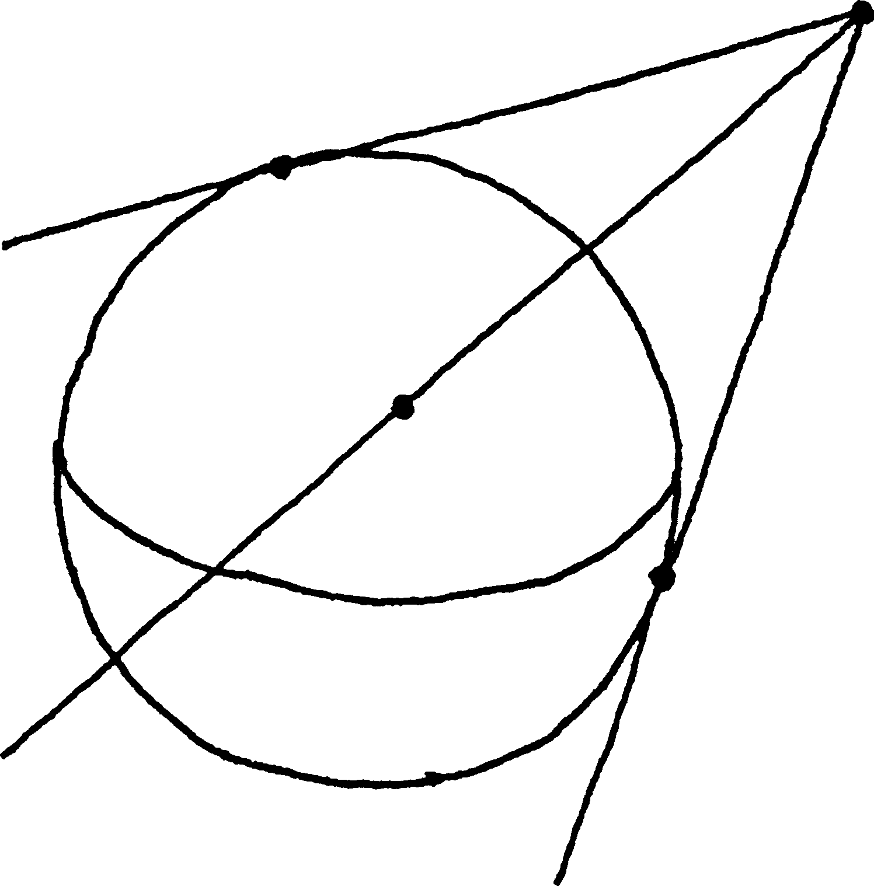
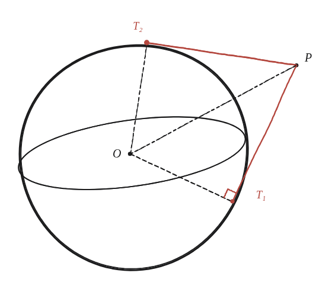

Per què totes les tangents d'un punt donat a una esfera tenen la mateixa longitud?

Què hem de produir
Un argument que valgui per a qualsevol de les infinites rectes tangents des d'un mateix punt exterior —no la comprovació d'un sol cas.
El radi i la tangent són perpendiculars
Igual que en un cercle, el radi que va del centre al punt de tangència és perpendicular a la recta tangent en aquell punt —encara que ara s'estigui en tres dimensions. Amb el centre O, el punt exterior P, i un punt de tangència T qualsevol: quin angle té el triangle OPT al vèrtex T?
La construcció
Dos punts de tangència diferents, T₁ i T₂, cadascun formant el seu propi triangle amb O i P.

Tancar-ho
El triangle OPT és rectangle en T, amb hipotenusa OP —fixa, la distància del punt exterior al centre— i un catet OT —el radi, també fix. Pitàgores dona l'altre catet PT en termes només d'OP i del radi: PT = √(OP² − radi²) —cap referència a quin punt de tangència T és. Com que OP i el radi són els mateixos per a totes les tangents, PT també ho és.
Totes les tangents des d'un mateix punt exterior a una esfera tenen la mateixa longitud, √(OP² − radi²), perquè aquesta fórmula no depèn de quin punt de tangència es triï —només de la distància OP i del radi, que són els mateixos per a totes.
Comprovació
Distància del punt exterior al centre: 10. Radi de l'esfera: 6. Longitud de qualsevol tangent: √(10²−6²) = √64 = 8, la mateixa per a totes.
El mateix argument, amb el mateix triangle rectangle, és el que ja serveix per a tangents des d'un punt a un cercle en 2D —aquí no canvia res essencial en passar a tres dimensions, només cal comprovar que el pla que conté O, P i T sempre existeix (tres punts no alineats determinen un pla).